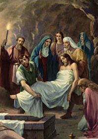

XIV. állomás: Jézust testét sírba teszik

"Keresztre feszítették, meghalt és eltemették..." Krisztus élettelen testét helyezik a sírba. A sírkő azonban nem művének végső pecsétje. Az utolsó szó nem a csalásé, a gyűlöleté és az erőszaké. Az utolsó szót a szeretet mondja ki, amely erősebb még a halálnál is. "Ha a földre hullott búzamag nem hal meg, akkor egyedül marad, ha azonban meghal, akkor bőséges gyümölcsöt hoz" (Jn 12,24). A sírbolt az utolsó szakasza Krisztus halálának, az ő egész földi életének; legteljesebb áldozatának jele, amelyet értünk, a mi üdvösségünkért vállalt. Jó korán, azonnal ez a sír a dicséret és az Isten Fiának az Atya dicsőségében való felmagasztalásának első híradása. "Keresztre feszítették, meghalt és eltemették, (...) harmadnapon föltámadt a halálból." Jézus élettelen testének a Golgota lábánál lévő sírba történő helyezésével az egyház megkezdi a nagyszombati virrasztást. Mária mélyen megőrzi Fia szenvedését a szívében, és elmélkedik róla. Az asszonyok a szombat utáni nap kora reggelén találkoznak, hogy fűszerekkel kenjék meg Krisztus testét. A tanítványok összegyűlnek, az utolsó vacsora termének rejtekében, amíg nem múlik el a szombat. Ez a virrasztás a sír melletti találkozással fejeződik be, mégpedig az Üdvözítő üres sírjánál. Akkor már a sír, a föltámadás néma tanúja beszélni kezd. A követ elhengerítik, a belseje üres, a leplek a földön, ez az, amit a sírhoz érkező János lát Péterrel együtt: "Látott és hitt" (Jn 20,8). S vele együtt hitt az Egyház, amely ettől a pillanattól kezdve sohasem fárad bele, hogy továbbítsa a világnak hite alapvető igazságát: "Krisztus föltámadt a halottaiból, mint az elszenderültek zsengéje" (1Kor 15,20). Az üres sír a végleges győzelem jele, az igazságé a hazugság fölött, a jóé a rossz fölött, az irgalmasságé a bűn fölött, az életé a halál fölött. Az üres sír a reménység jele, amely "nem csal meg" (Róm 5,5). "Reményünk halhatatlansággal teljes" (vö. Bölcs 3,4).
Úr Jézus Krisztus, akit az Atya a Szentlélek erejében vezetett ki a halál árnyékából a dicsőséges új élet fényébe, add, hogy az üres sír jele szóljon hozzánk és a következő nemzedékekhez; váljék az élő hit, a nagylelkű szeretet és a szilárd reménység forrásává. Neked Jézus, aki a világ történelmében elrejtezett és győzedelmes jelenlét vagy, tisztelet és dicsőség mindörökkön örökké. Amen.